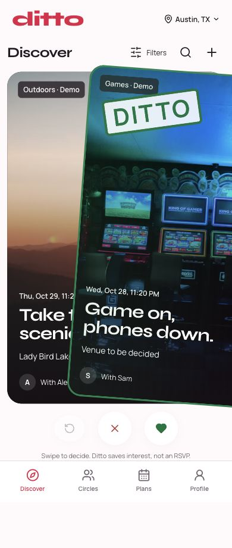
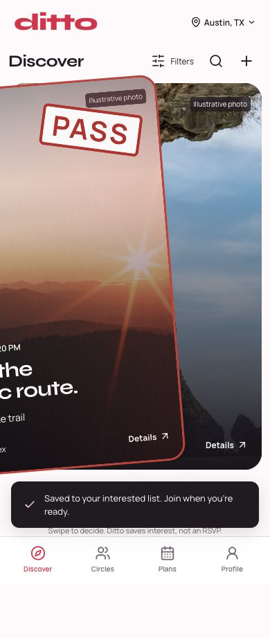

Actual local application screenshots. The rebuilt frontend preserves SQLite, saved votes and group planning. Desktop and phone widths are browser emulation; physical devices remain unverified. No production deployment.

